地政学
サントメはギニア湾の島国首都として、ポルトガル語圏アフリカ、中央アフリカ、海上交通を結びます。小国外交、漁業権、海洋安全保障、気候資金、石油探査の期待が、港近くの官庁街に集まります。国連外交も身近です。
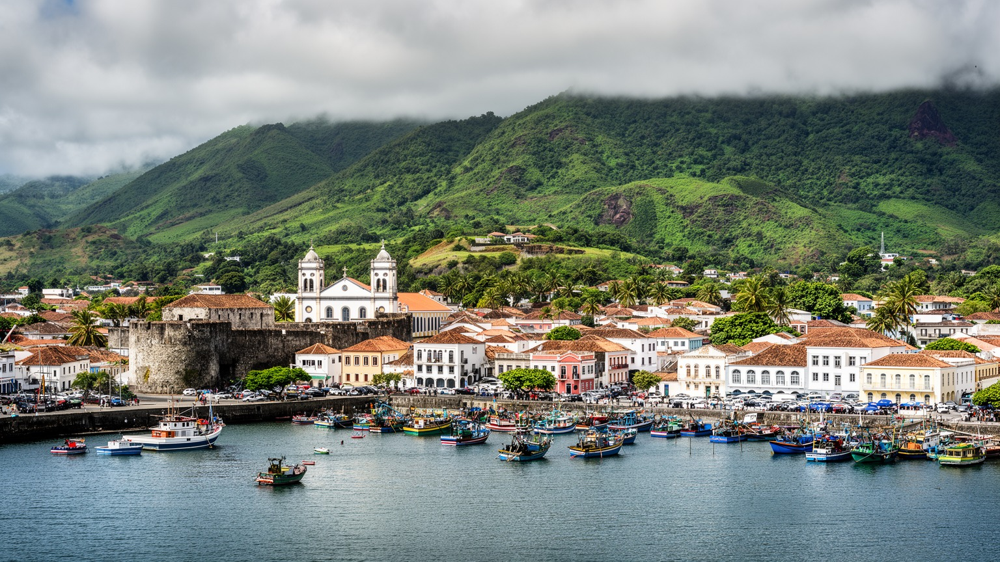
🇸🇹 サントメ・プリンシペ / ギニア湾 / World City Atlas
赤道近くの火山島に、港、官庁、旧要塞、市場、教会、カカオ農園の記憶、海辺の生活が集まる小さな島国の首都です。
都市の骨格
サントメは火山島の北東岸にあり、港、官庁、市場、学校、教会、ホテル、空港への道が短い距離に集まります。植民地期のカカオ経済と独立後の国家運営が、海辺の街路に重なっています。
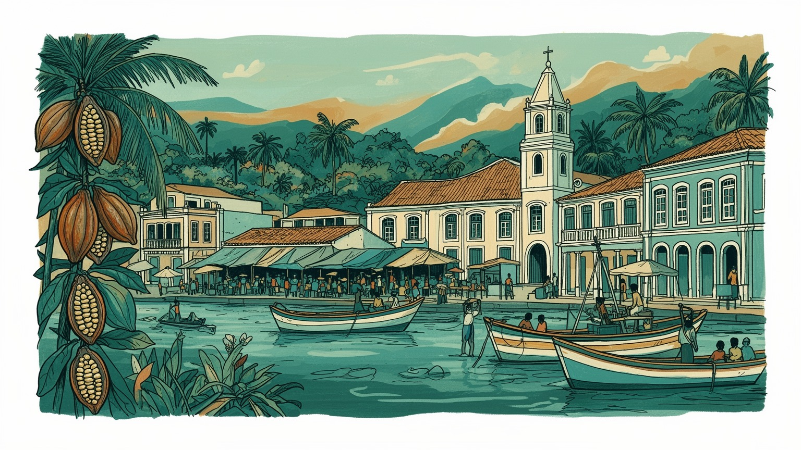
サントメはギニア湾の島国首都として、ポルトガル語圏アフリカ、中央アフリカ、海上交通を結びます。小国外交、漁業権、海洋安全保障、気候資金、石油探査の期待が、港近くの官庁街に集まります。国連外交も身近です。
行政、港湾、漁業、小売、観光、建設、教育、医療が首都の雇用を支えます。カカオとコーヒーの農園遺産は今も重要で、若者の仕事不足、輸入依存、技能形成が都市経済の課題になります。港の物価も家計に響きます。
ポルトガル語、フォロ語、カトリック、福音派教会、島の音楽、食卓、独立記念の記憶が混ざります。奴隷制とプランテーションの歴史は痛みを伴いながら、今日の家族と祝祭にも影を落とします。祈りは共同体を結びます。
旅行者は要塞、湾岸、中央市場、大聖堂、農園跡、近郊の海岸を巡ります。住民には物価、交通、住宅、水道、電力、医療、若者の進路が日常で、島の穏やかさと脆さが同居します。雨季の移動も課題です。旅にも響きます。
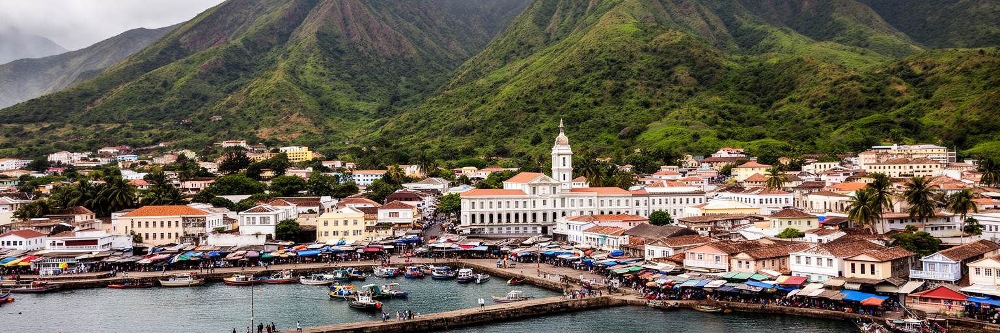
サントメはサントメ島北東岸の湾に面し、港、官庁、中央市場、教会、学校、病院、ホテル、空港へ向かう道路が近い距離に集まります。市街地は大都市のように広がるのではなく、海岸の低地と背後の緑、周辺の集落、農園跡を結びながら島の中心を作っています。ギニア湾の中では小さな点に見えますが、国の輸入品、旅客、行政手続き、外交、教育、医療の多くがここを通ります。島国では港が単なる物流施設ではなく、生活費、食料、燃料、建材、医薬品、観光の入口になります。船の遅れや燃料価格の変動は、すぐに市場の値段や家庭の支出へ響きます。湾岸の景観は穏やかでも、都市の機能は外部世界への依存と向き合っています。サントメを読むには、海の美しさだけでなく、港と市場がどのように住民の毎日を支えているかを見る必要があります。朝の魚、輸入食品を運ぶ車、官庁へ向かう人、学校へ歩く子どもが同じ小さな都市空間に重なります。首都の尺度が小さいため、国家と日常の距離は近く、政策の変化も生活の感覚として現れやすいです。湾岸にあることは開放性であり、同時に物価、気候、海上交通に左右される脆さでもあります。夕方の海辺には散歩や会話が戻り、港で働く人と家族連れが同じ風を受けます。この近さが、首都の温かさと緊張を同時に見せます。小さな湾は国の窓でもあります。
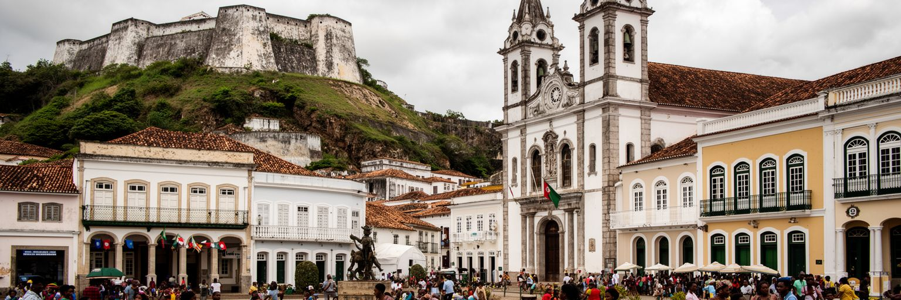
サントメの旧市街には、ポルトガル植民地期の要塞、教会、行政建築、港湾の配置が残ります。十五世紀末から島は大西洋世界の砂糖、奴隷制、のちのカカオ農園と深く結びつき、都市の成立そのものが暴力的な労働制度と切り離せません。独立後の首都は、その遺産を国家の記憶として引き受けながら、議会、政府機関、学校、博物館、広場を通じて新しい公共性を作ってきました。古い建物は観光資源である一方、修繕費、湿気、塩害、用途変更、行政予算の不足に直面します。保存は過去を美しく飾ることではなく、植民地支配の記憶、労働の痛み、独立の経験を市民が語り直すための基盤です。要塞や大聖堂を歩くと、石造りの静けさの背後に、島へ連れて来られた人々、農園で働いた人々、独立を求めた人々の時間が見えてきます。サントメの政治的な中心性は、壮大な庁舎よりも、こうした歴史の上で小さな国家を運営し続ける姿にあります。旧市街が生きた都市であり続けるには、建物の修復だけでなく、周辺の市場、歩道、排水、公共交通、住民の商いも守る必要があります。歴史地区が住民から切り離されると、記憶は展示物になってしまいます。日常に使われる遺産こそが、独立後の首都の厚みを作ります。学校の授業や家族の語りが建物と結びつく時、若い世代も旧市街を自分の歴史として受け取れます。
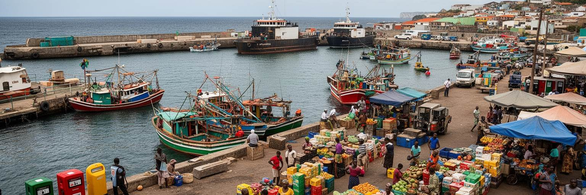
サントメの経済を動かす現場の一つは港です。国土が小さく、製造業の幅も限られるため、食料、燃料、機械、建材、車両、医薬品、日用品の多くは外から入ります。港で荷が下ろされ、通関され、倉庫や市場へ運ばれる流れは、首都の物価と雇用を直接左右します。漁業は沿岸の食卓と小商いを支えますが、冷蔵設備、加工、衛生、燃料費、漁場管理が十分でなければ収入は安定しません。観光客が増えればホテル、レストラン、ガイド、交通、土産物の仕事が生まれますが、輸入食材や燃料への依存が高ければ、外貨の流出も大きくなります。政府は港湾整備、道路、税関、電力、通信を改善しようとしますが、財政規模は限られています。サントメの港湾経済を読む時、貿易額だけでなく、港で働く人、市場で売る人、漁から戻る人、買い物をする家族の負担を見る必要があります。船が遅れれば棚が空き、燃料が上がればバス代や魚の値段も揺れます。小さな首都では、物流の弱さがすぐに生活の不安になります。一方で、港は新しい産業を育てる入口でもあります。カカオやコーヒーの高付加価値輸出、魚の加工、観光サービス、地域航路が育てば、首都の仕事は少しずつ広がります。港は外部依存の象徴であり、自立の可能性を探る場所でもあります。倉庫や修理、清掃、運転の仕事まで含めると、港は多くの家計を支えます。
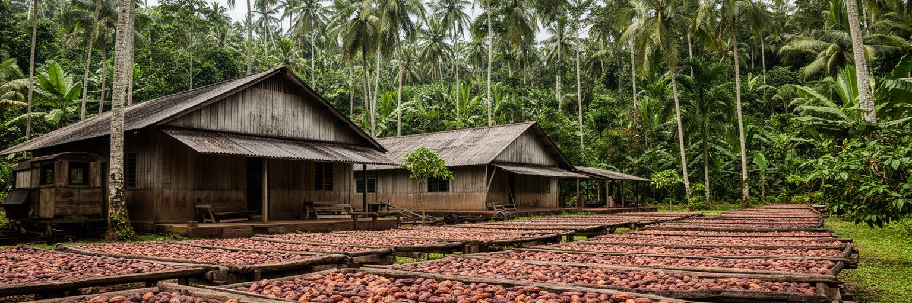
サントメを理解するには、街の外へ続くカカオ農園の記憶を避けられません。サントメ・プリンシペはかつてカカオ生産で世界的に知られ、ロサと呼ばれる大農園は住居、病院、倉庫、鉄道、礼拝堂を備えた独自の社会を作りました。しかしその繁栄は、奴隷制の後も続いた厳しい契約労働、移住労働、植民地支配に支えられていました。独立後、農園経済は大きく変わり、多くのロサは老朽化し、住民の住宅、学校、観光施設、文化遺産として再利用されています。首都サントメは、農園で生まれた富と労働の歴史を港と行政に集めてきた都市です。現在のカカオは量ではなく品質、チョコレート加工、フェアトレード、観光体験、農村の所得向上と結びつける必要があります。ロサを美しい廃墟として消費するだけでは、そこで暮らした人々の痛みや現在の貧困は見えません。農園遺産を生かすには、修復、住民参加、交通、教育、農業技術、土地権利を同時に考える必要があります。サントメの市場で売られる食材、街のチョコレート店、観光ツアー、農村から通う若者は、都市と農園が今もつながっていることを示します。カカオは甘い商品である前に、島の労働史と土地利用を映す鏡です。その記憶を正直に扱うことが、首都の文化と観光の信頼を高めます。農園で暮らす人の住宅と仕事を改善できてこそ、遺産は未来の資産になります。
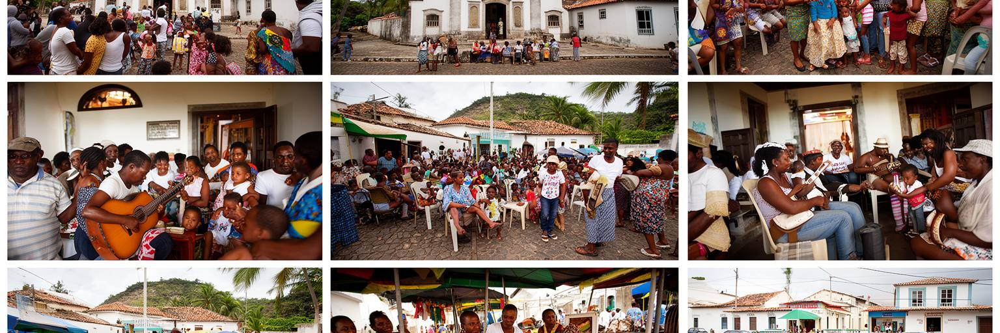
サントメの文化は、ポルトガル語を公用語としながら、フォロ語などのクレオール、カトリック、福音派教会、アフリカ系の記憶、植民地期の影響、島の音楽と食によって形作られています。教会は礼拝だけでなく、結婚、葬儀、洗礼、合唱、慈善、地域の相談、若者活動を支えます。市場や家庭では魚、バナナ、パンの実、豆、唐辛子、ココナツ、カカオ、コーヒーが日常の味を作り、移民と農園の歴史を静かに伝えます。島の共同体は小さく、人間関係が近いため、家族、近所、教会、学校、職場のつながりが生活の安心に大きく関わります。一方で、近さは噂や社会的な圧力にもなり、若者や女性が自分の進路を選ぶ時には支えと制約の両方になります。首都サントメでは、地方から来た人、海外で暮らす親族を持つ家族、観光業に関わる人、公務員、学生が交わります。海外送金や留学、ポルトガル語圏との関係は、島の文化を外へ開きます。祭礼や音楽は観光向けの演出だけでなく、苦しい歴史を持つ社会が自分の声を保つ方法でもあります。サントメの文化を読むには、教会の鐘、市場の会話、家族の食卓、海辺の夕方を同じ生活世界として見る必要があります。そこでは国の小ささが弱さではなく、記憶を共有しやすい密度にもなっています。信仰と文化は、制度だけでは届かない生活の支えを作ります。歌や食事を通じて世代がつながることも、島の社会を保つ力です。
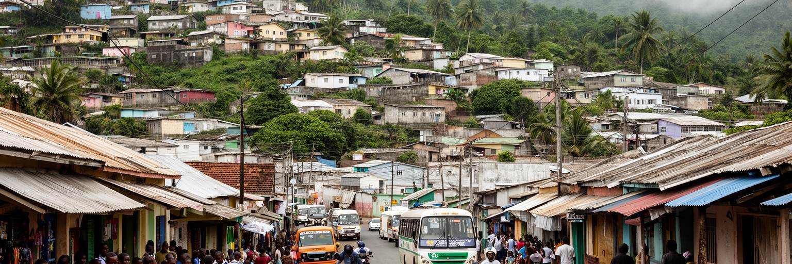
サントメの日常生活は、港や旧市街の近くから周辺の住宅地、坂道の集落、農園跡に広がります。住民は通勤、通学、買い物、礼拝、病院、役所、親族訪問を、限られた道路とバス、徒歩、バイク、乗合交通で組み立てています。所得の高い世帯と低い世帯の差は、住宅の質、水道、電力、インターネット、調理燃料、学校への距離、医療へのアクセスに表れます。国の規模が小さいため、専門医療や高等教育、特定の仕事を求める人は海外や他地域とのつながりを意識せざるを得ません。若者にとって首都は機会の中心ですが、仕事の選択肢は限られ、観光、行政、小売、建設、教育、海外移住の間で将来を考えることになります。輸入品の価格が上がれば家計はすぐに圧迫され、燃料や電力の不安定さは商売や勉強にも影響します。サントメの暮らしを読むには、穏やかな海辺の印象だけでなく、家族が毎月どのように食費、交通費、学費、通信費をやりくりしているかを見る必要があります。小さな都市では、近所の助け合いが大切ですが、公的サービスが弱い部分を家庭だけに背負わせると負担は大きくなります。歩道、街灯、排水、学校、診療所、安定した電力のような基本が整うほど、住民の時間は守られます。首都の豊かさは、高い建物ではなく、毎日の用事を安心して済ませられるかに表れます。雨の日にも子どもが安全に通学できる道は、都市の公平性を示します。
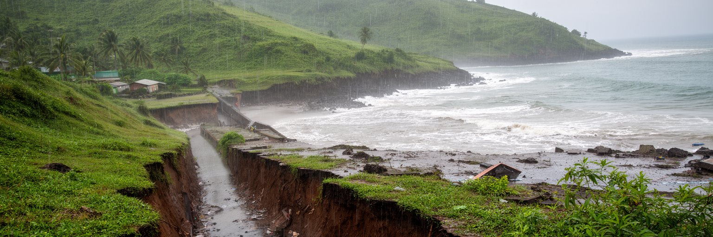
サントメは赤道近くの湿潤な気候にあり、強い雨、海風、熱帯の緑が都市の表情を作ります。雨は農業と水資源を支えますが、排水不良、斜面の崩れ、道路の傷み、河川の増水、海岸浸食を通じて生活を揺らします。小さな島国では、気候変動の影響が国土全体に近い距離で現れます。海面上昇や高潮は港、海岸道路、低地の住宅、観光施設に関わり、強雨は市場や学校への移動を難しくします。廃棄物が排水路をふさげば、短い雨でも浸水が広がります。気候リスクは自然現象だけでなく、住宅の場所、所得、道路整備、情報、保険、避難手段によって被害が変わる社会問題です。サントメのような首都では、官庁や港を守るだけでなく、低所得地区、学校、診療所、漁業者、農村と市街地を結ぶ道を守ることが重要になります。国際的な気候資金は大切ですが、実際の適応は排水溝の清掃、斜面管理、海岸植生、早期警戒、建築基準、住民の避難計画という地味な作業にかかっています。島の美しい緑は、観光の背景であると同時に水循環を保つ基盤です。森を失えば、土砂、洪水、乾季の水不足も深刻になります。サントメの都市運営は、雨と海の恵みを受けながら、その力に備える仕事でもあります。気候に強い首都は、住民の移動と学びを止めない首都です。地域の清掃や学校での防災教育も、首都を守る実践になります。
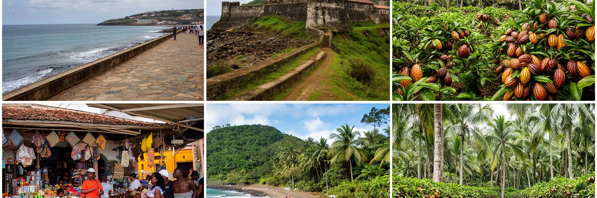
サントメの観光は、旧要塞、湾岸、中央市場、大聖堂、博物館、カフェ、近郊の海岸、農園跡、熱帯林への入口として成り立っています。旅行者は首都で宿泊し、ガイドや車を手配し、島の南部や山地、ロサ、海岸へ向かいます。ここで大切なのは、観光を単なる自然の消費にしないことです。カカオ農園の歴史、奴隷制と契約労働の記憶、漁村の暮らし、教会の時間、地元の食堂や市場を理解してこそ、島の旅は深くなります。観光は外貨をもたらし、若者の仕事を作りますが、輸入食材に頼るホテル、限られた水や電力、廃棄物、海岸開発、土地価格の上昇を伴う場合もあります。小さな島では、来訪者の行動が地域に与える影響は大きいです。写真を撮る相手への配慮、宗教施設での敬意、自然保護区でのルール、地元ガイドや小商いへの支出が、観光の質を決めます。サントメの魅力は、派手なリゾートだけではなく、首都から短い距離で都市、農園、森林、海岸、漁業、歴史がつながることにあります。観光政策が住民の生活を押し出さず、修復職人、農家、漁業者、ガイド、女性の小商いに利益を残せれば、首都は自然観光の単なる通過点ではなくなります。歩ける旧市街と学べる農園、清潔な海岸、信頼できる交通がそろう時、サントメは小さな島国の奥行きを伝える入口になります。短い滞在でも、港の朝と森の午後を結べることが旅の強みです。
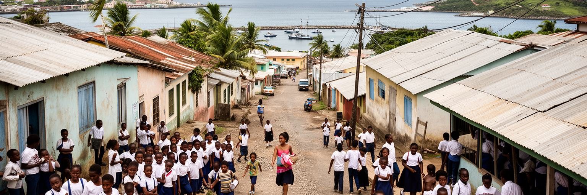
サントメには学校、職業訓練、行政、観光業、商店、港湾の仕事が集まり、若者にとって国の中で最も機会が見えやすい場所です。それでも選択肢は十分とは言えません。小さな経済では、公務、教育、医療、観光、小売、建設、漁業、農業加工、海外就労が進路の大きな柱になります。高等教育や専門医療、技術職の一部は国外との関係に頼る場面があり、ポルトガル語圏のネットワークや留学は重要です。若者が島を出ることは家族に送金や経験をもたらしますが、技能を持つ人が戻らなければ国内の人材不足も深まります。首都の教育を読むには、学校の教室だけでなく、家庭の学費負担、通学路、インターネット、図書館、職業訓練、起業支援、女性の進路、障害のある若者のアクセスを見なければなりません。観光やカカオ加工を伸ばすにも、語学、接客、衛生、会計、デジタル技術、整備、環境管理を学べる仕組みが必要です。サントメの将来は、大規模な産業誘致だけでなく、若者が小さな仕事を積み上げ、島に残る理由を持てるかにかかっています。海を越える進路と島に根ざす生活を対立させるのではなく、学んだ技能が戻って使える制度を作ることが大切です。学校帰りの道、港での実習、観光ガイドの研修、農園での加工技術が結びつく時、首都は次世代の実験場になります。若者が声を出せる公共の場も、島の未来を考える土台になります。
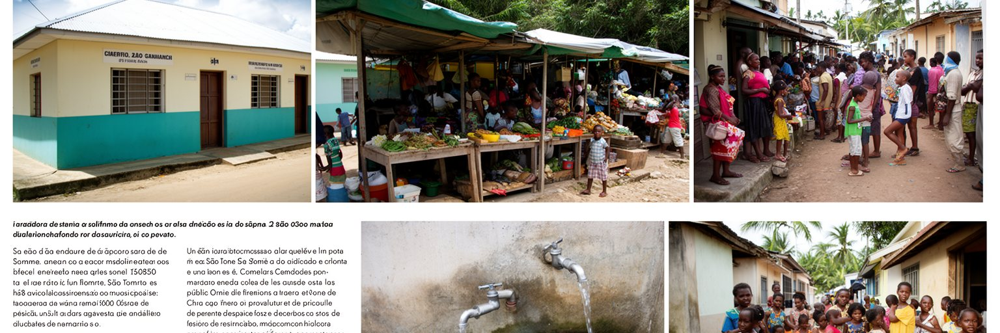
サントメの社会課題は、首都の規模が小さいから軽いわけではありません。医療の専門性、薬の入手、母子保健、感染症対策、栄養、若者の失業、ジェンダーに関わる安全、家庭の貧困、障害のある人の移動、清潔な水と衛生は、日常の安心を左右します。国の人口が少ないほど、一人の医師、看護師、教師、技術者、行政職員の不足が社会全体に影響します。首都には比較的多くのサービスが集まりますが、地方やプリンシペ島から見れば、そこへ行く交通費と時間が負担になります。市場や港の衛生、廃棄物処理、公共トイレ、歩道、街灯、バス停、診療所までの道は、目立たない公共性です。観光客に見える旧市街の景観だけを整えても、住民が薬を買えず、学校へ安全に通えず、雨の日に診療所へ行けなければ都市の評価は上がりません。サントメでは、家族や教会の助け合いが重要ですが、社会問題を共同体だけに任せると弱い立場の人ほど声を出しにくくなります。公的サービス、地域組織、国際支援、民間の小さな仕事が連携してこそ、生活の底が支えられます。小さな首都の良さは、課題の現場が政策担当者から遠くないことです。その近さを生かし、住民の経験を制度に反映できれば、公共空間は観光の舞台ではなく、誰もが使える安心の基盤になります。保健と福祉は、国の尊厳を街路で測る指標です。
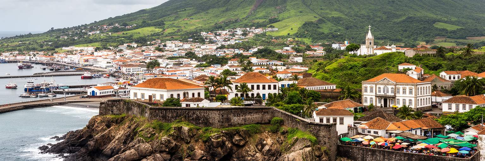
サントメは人口やGDPの規模では世界の大都市ではありません。しかし、世界都市を読む上で重要な論点が非常に濃く集まっています。大西洋奴隷制とプランテーション、ポルトガル語圏の歴史、ギニア湾の海上交通、小国外交、輸入依存、カカオの高付加価値化、観光と自然保護、気候変動、若者の移動、公共サービスの不足が、短い距離の首都に重なります。大きなスカイラインがなくても、港で下ろされる燃料、市場の魚、旧要塞の石、教会の鐘、農園跡へ向かう道、学校の教室、海岸の浸食を同じ地図に置くと、サントメの世界性が見えてきます。小さな国では、政策の失敗も成功も住民の生活に近い形で現れます。観光を伸ばすなら、歴史を正直に伝え、自然を守り、地元の仕事に利益を残す必要があります。港を整えるなら、物流だけでなく市場の価格と家庭の負担も考える必要があります。教育を強めるなら、若者が国外へ出ても戻って力を発揮できる制度が要ります。サントメは、豊かさを巨大な開発で示す都市ではなく、限られた資源をどう公平に使い、海と歴史と暮らしをどう守るかを問う都市です。湾岸の穏やかな光の中に、世界史の痛みと島国の未来が同時にあります。その複雑さを丁寧に読むことが、この首都を理解する入口になります。小さな街路に国家の課題が現れるからこそ、観察は具体的になります。